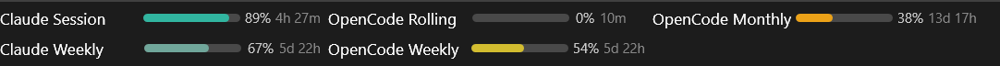
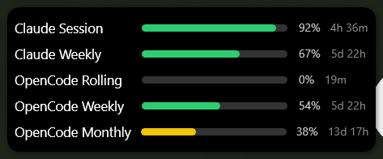
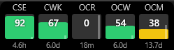
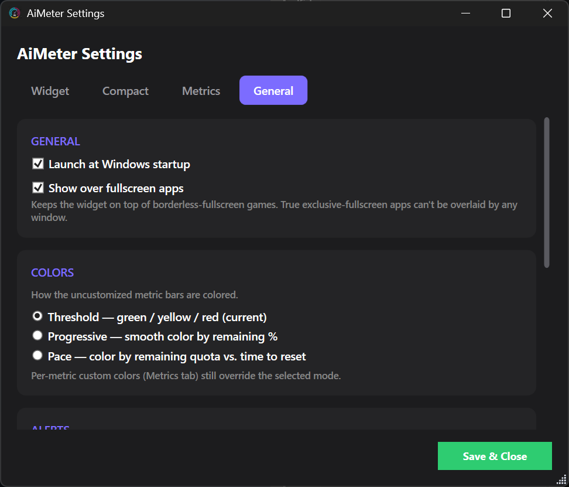

AiMeter is a small Windows widget that shows how much of your Claude and
OpenCode quota is left and when it resets. It sits on top of other windows, over the
taskbar, or right inside it.
Windows 11 24H2 or later, x64 · Free and open source (MIT)

Deskband layout: the bars sit inside the Windows 11 taskbar.
Three layouts

Compact
A slim, draggable strip of bars with percent left and a short reset label.

Taskbar
Thin vertical columns docked over the taskbar, with a countdown on each.

Settings
Choose metrics, colors, alerts, opacity and accounts.
Features
Claude and OpenCode together. Session, weekly and Extra Usage limits, plus OpenCode Go rolling, weekly and monthly usage.
Live reset countdowns, shown in days and hours for long windows.
Color modes: fixed thresholds, a smooth gradient, or pace (quota left versus time to reset).
Notifications when a quota runs low, runs out or resets.
Game friendly. Stays above borderless-fullscreen games and lets clicks pass through while you play.
Tray app that can launch at sign-in, with adjustable opacity and hover dimming.
Private by design
You sign in on the providers' own pages. Your session and settings
stay on your PC. AiMeter has no server and no telemetry, and it connects only to
claude.ai and opencode.ai. Read the privacy policy.